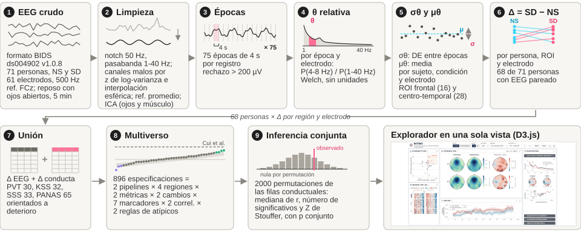
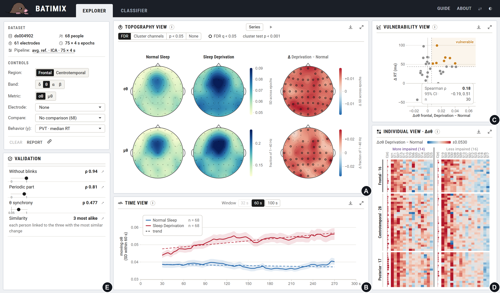
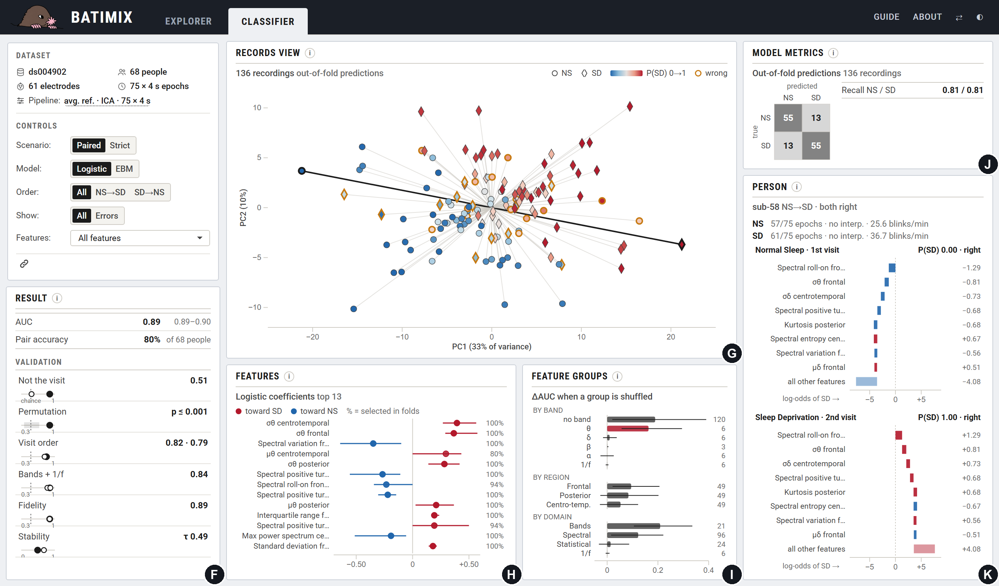

Problema
Tras una noche sin dormir, unas personas rinden mucho peor y otras casi igual. El promedio del grupo oculta esa diferencia.
Cui et al. (2026) propusieron un marcador en el EEG de reposo: cuánto se vuelve más irregular el ritmo theta (4–8 Hz).
Pregunta: ¿qué cambia en el cerebro tras no dormir, y sirve para saber quién se deteriora?
Para quién: investigadores del sueño que exploran datos públicos antes de una prueba formal.
Datos
- OpenNeuro ds004902 (Xiang et al., 2024, CC0).
- 68 personas con EEG en dos noches: tras dormir normal (NS) y tras 24–30 h sin dormir (SD).
- 61 electrodos, 5 min en reposo con ojos abiertos.
- Conducta: reacción (PVT, 30 personas), somnolencia (KSS, SSS) y ánimo (PANAS).
Qué medimos, en épocas de 4 s: σθ = qué tan irregular es theta; μθ = su nivel medio; Δ = SD − NS.
Preguntas
Método

Hallazgos
Explorer: qué cambia, dónde, cuándo y en quién

Classifier: qué rasgos delatan la noche sin dormir

Interacciones clave
- Clic o lazo sobre personas: todas las vistas pasan a mostrarlas, también en la otra pestaña.
- Clic en un electrodo (mapa o mapa de calor): pasa a ser el eje x y la serie de tiempo.
- Clic o arrastre en la vista de tiempo: mapas y personas se recalculan para esa ventana; Series muestra mapas por bloque y ▶ recorre los 5 minutos.
- Compare: divide a todos en dos grupos (sexo, sueño habitual, orden de sesión) y repinta todo con dos colores.
- Band: repite todo para δ, α o β.
- ⓘ en cada vista: cómo leerla y sus cifras. Un enlace guarda la vista exacta.
¿Solo theta?
Electrodos donde σ sube tras la privación (FDR, de 61):
Theta es la banda que más cambia. En delta, el aumento es sobre todo fondo 1/f, no un ritmo.
¿Podemos confiar?
- Es un ritmo real: el cambio sigue a la parte rítmica de theta (ρ = 0.81), no al fondo 1/f.
- No son parpadeos: sin ellos, el cambio casi no varía (ρ = 0.94).
- No es la segunda visita: ajustado por el orden de sesión, el efecto sigue en 61 de 61 electrodos; el de la visita, en ninguno.
Lo que aprendimos
- Un efecto claro en el grupo no es un marcador individual.
- Explorer y Classifier llegan a lo mismo por caminos distintos: σθ es la señal más fuerte.
- Mostrar los controles junto al resultado evita leer un AUC alto como una explicación fiable.
Limitaciones
- Solo 30 personas tienen PVT en las dos noches.
- El vínculo con la reacción es frágil: un cambio pequeño en la limpieza lo mueve.
- No hay un marcador de vigilancia durante el registro.
- Falta una prueba con usuarios.
Acceso
La aplicación funciona en el navegador, sin instalar nada. La página del proyecto tiene el video, el paper y los datos procesados.
Implementación: D3.js en el navegador; procesamiento en Python con MNE, specparam, TSFEL, scikit-learn e InterpretML.